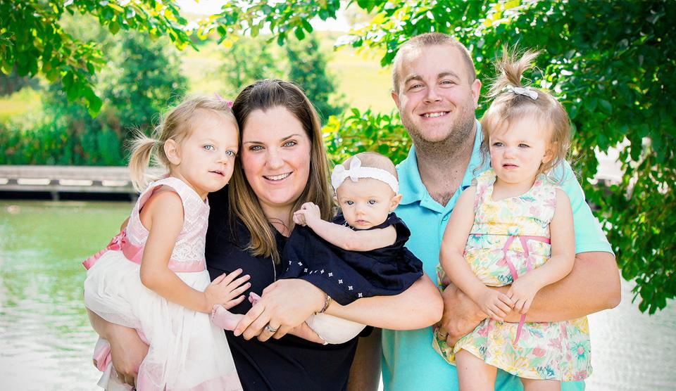

<!DOCTYPE html>
<meta charset="UTF-8">
<meta name="viewport" content="width=device-width, initial-scale=1">
<link rel="stylesheet" href="https://www.w3schools.com/w3css/3/w3.css">
<body>

<!-- hello -->

</body>
</html>

<nav class="w3-bar w3-purple">
  <a href="#home" class="w3-button w3-bar-item">MaryGrace's Application to Raisley.com</a>
</nav>

<section class="w3-container w3-center" style="max-width:700px">
  <h2 class="w3-wide"> Work Hard. Be Kind. </h2>
</section>

<section class="w3-container w3-content" style="max-width:1000px">
<h3> <strong>
Why would you be a good fit for the Customer Advocate role? </strong> </h3>

<p> I love that the Customer Advocate role has so much depth to it, I want to be able to do a variety of tasks. I love to solve problems, work hard, work independent and dependently, learn/teach new technologies, help others, and so much more. This role would be a great fit for my lifestyle and goals. Instead of telling you why, I would love to show you through some examples.</p>

<p>Growing up, my family had an orchard. In order to make ends meet we would need to get produce gathered to store and sell. As a young child, I would set achievable goals for myself to pick a specific amount of raspberries before I made it to soccer practice or a friend’s house. I would try to pick 18 pints (3 baskets worth), knowing that this would bring in about $50. Not only was I learning how to set goals, I was learning how to achieve success through hard work. To this day, I cannot put down a task without putting in all of my effort to accomplish it. Whether this means trouble shooting technology, figuring out a way to de-escalate my 3 year old so we can finish our gymnastics class, or even googling how to change a fuse in my car so that my van door will close again.</p> 

<p>In college, I worked at a non profit camp called Camp Albrecht Acres that specializes in special needs for adults. This experience changed my life forever. Here I learned how to be a better communicator, see people for who they are with non judgmental eyes (be more inclusive), critical think/problem solve, and see life with a new and improved perspective. I had to challenge myself every day to give my campers the best week possible. I had to figure out the best route to get my wheel chair bound camper into the pool. When my camper couldn’t speak because of his severe cerebral palsy, we figured out ways to communicate with his picture board and hand movements. If a camper had autism, I had to pay close attention to what made her happy or what triggered a behavior. I thought I went to camp to make a difference, but really camp made a profound impact on me. All of these skills I carry with me every day.</p>

<p>I am driven and a problem solver. In order to apply to this position, I had to teach myself how to write basic html code. Instead of asking my husband who is a Senior Quality Engineer, I decided to use the power of the internet myself. I discovered that I really enjoy learning about html and css, I am very grateful for www.w3schools.com for providing me the tools to write this site. I look forward to continue learning more html so that I can create more sites for friends and family. </p>

<p>I believe in technology. Everywhere we turn there is technology, any type of screen (phones, TVs, ads on the highway, tablets, etc.),  medical equipment, echo, automated blinds, scentsy warmers, cameras, internet (search engines, social media, live streaming, etc.), and the list goes on. I see the potential technology has to make the world a better place and look forward to working with this company so that I can be a part of it. </p> 


<h3> <strong> Why do you want to work here over somewhere else? </strong></h3>

<p>Raisely is an innovated and friendly company. I have lived the benefits of fundraising/campaigns/donations along with most people I know. This is an opportunity where I can help make a positive impact on so many lives. The camp that changed my life was non profit and survived from donations. I love that Raisely makes it possible for groups and individuals to raise money for what they are passionate about and even better they can do it for FREE. As a Customer Advocate I can do my part to make their campaigns seamless, successful and ethical. The goals of the company align with my ethics and personal goals in life. This is an incredible opportunity that I cannot wait to jump head first into. </p>

<h3> <strong>Look at this list of tasks and tell us which two you are excited by, which two you want to learn and the two you don’t want to do.</strong></h3>

<p> Many of these tasks are exciting to me, but I would most look forward to running a training webinar. The idea of directly working with people to train them on how to use a tool would be fulfilling. I love to listen to other’s stories and passions. I could do all this via the webinars. I would also enjoy Handling an upset customer worried about a missing feature. This might not be everyone’s favorite task, but I know I would be able to problem solve with the customer until their issue was resolved. Knowing that i was providing solutions and great customer service would be satisfying. </p>

<p>I want to learn how to change the fonts and background color on someone’s campaign. I am really enjoying learning html/css so being able to help on the more technical side of the business would be great! I also want to learn how to work with developers to debug and resolve a product issue (my QE husband would love for me to learn this too). I am efficient and coachable, so I know these will be doable tasks for me.</p>

<p>I don’t look forward to importing data into a new kelpla account or responding to 20 support emails. These tasks seem more repetitive than “fun” but are definitely an important part of giving a quality product and making the site run smoother! </p>


<h3> <strong> Tell us about a company who does customer support well, and why you think they’re good. </strong> </h3> 

<p>  A company that does customer support well doesn’t just focus on customer support, but first a good product. That product should be simple and effective. I love that Raisley has a clean simple layout, making it easy to set up a campaign (and it can be shared on so many social media platforms!).  When issues do arise, customer support is readily available in accessible ways. These should be email and chat first, and then a phone call if more assistance is needed. The person providing the support should be kind, easy to understand, and patient; but also highly knowledgable in their product.  
</p>


</section>

<div style="text-align: center;">

<footer class="w3-container w3-padding-64 w3-center w3-purple w3-xlarge">
 
    Powered by <a href="https://www.w3schools.com/w3css/default.asp" target="_blank">MaryGrace Fagen</a>
  </p>
</footer>
